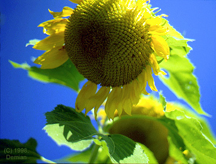
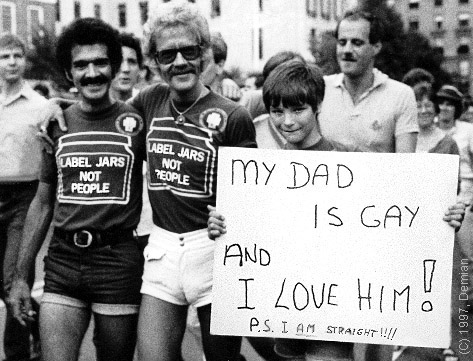
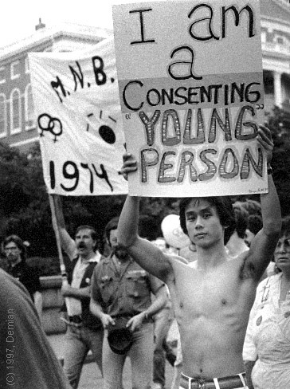
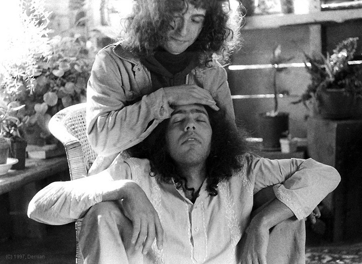

Images by Demian
| I started taking pictures when I was 12. My first love was stereoscopic imagery. Soon, however, I embraced many still and motion picture formats. Here are some examples of my candid and close-up work. |
|
 Sunflower, Butterworth Farm, Orange, Mass., circa 1975
 Gay Pride Day, Boston, June, 1980
 Gay Pride Day, Boston, June, 1980
|


|
 John Burton and Arthur (Artie) Platt, Butterworth Farm, Orange, Mass., circa 1975 |
| I printed all these examples from 35mm negatives and transparencies; the color is printed on Cibachrome material. The prints were scanned and lastly retouched in PhotoShop. |
|
Return to: Photography and Illustration Table of Contents
Entire contents © 2003, Demian |
|
Demian Box 9685, Seattle, WA 98109-0685 206-935-1206 demian@buddybuddy.com www.buddybuddy.com |